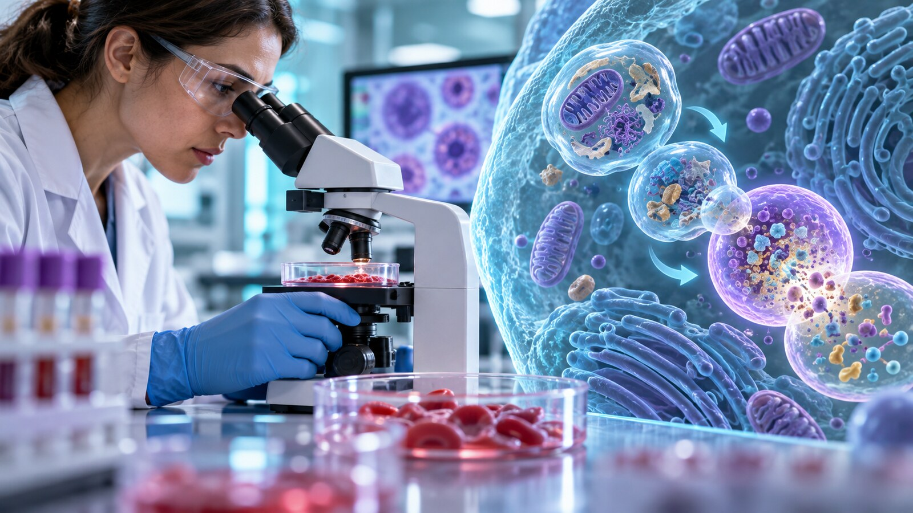
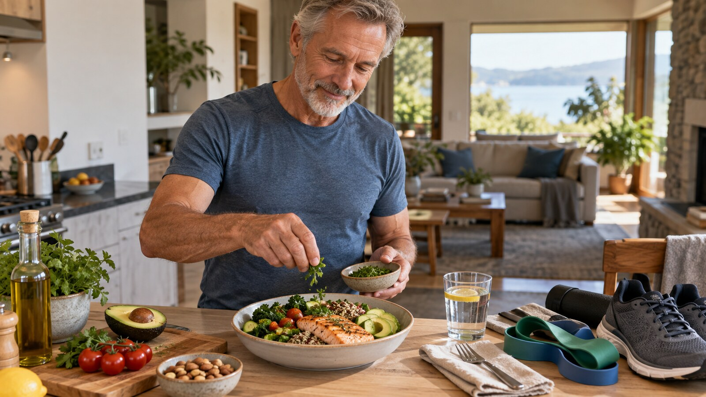

Post 36-godzinny wydłuża czas bez dostarczania energii, więc organizm stopniowo zużywa glikogen wątrobowy, zwiększa uwalnianie kwasów tłuszczowych i produkuje więcej ketonów. Nie działa jednak jak precyzyjny zegar. Tempo zmian zależy między innymi od ostatnich posiłków, aktywności, zapasów glikogenu, leków i stanu zdrowia.
Szybka odpowiedź
W czasie 36 godzin bez jedzenia zwykle spada stężenie insuliny, rośnie wykorzystanie tłuszczu i zwiększa się produkcja ketonów. Nie znamy jednej godziny „włączenia” autofagii, a wzrost hormonu wzrostu nie dowodzi ochrony mięśni. Przy cukrzycy, lekach, chorobie nerek, niedowadze lub zaburzeniach odżywiania taki post wymaga konsultacji.
Kluczowe wnioski
- Przejście od glukozy do większego wykorzystania tłuszczu i ketonów jest stopniowe i różni się między osobami.
- Jednorazowy post nie „resetuje” insuliny i nie ma potwierdzonej przewagi nad innymi wykonalnymi sposobami kontroli energii.
- Dane o autofagii u ludzi nie pozwalają wskazać dokładnej godziny ani obiecać odmładzania komórek.
- Po 50-tce decyzja powinna uwzględniać masę mięśniową, leki, choroby i ryzyko niedożywienia.
Jak zmienia się paliwo organizmu podczas 36 godzin bez jedzenia?
Po ostatnim posiłku organizm korzysta z dostarczonej energii i glikogenu wątrobowego. W miarę przedłużania przerwy rośnie uwalnianie kwasów tłuszczowych i produkcja ketonów. Granice między tymi etapami nie są ostre, dlatego nie należy przypisywać każdej godzinie jednego gwarantowanego procesu.
Przegląd w „Endocrine Reviews” opisuje przejście od metabolizmu glukozy do lipidów jako główną adaptację do głodzenia. Jednocześnie podkreśla, że korzyści kardiometaboliczne obserwowane w badaniach mogą zależeć od ubytku masy ciała i bilansu energii. To nie jest dowód, że dokładnie 36 godzin stanowi optymalną dawkę.
Jeśli celem jest poprawa metabolizmu, zacznij od podstaw opisanych w poradniku o diecie po 50-tce i regularnym ruchu, zamiast traktować długi post jako skrót.
Czy 36-godzinny post „resetuje” insulinę?
W trakcie niejedzenia insulina zwykle spada, ponieważ nie napływa energia z posiłku. To przejściowa odpowiedź fizjologiczna, a nie „restart receptorów” ani wyleczenie insulinooporności. Długoterminową poprawę ocenia się w kontekście masy ciała, aktywności, diety i leczenia, nie po pojedynczym poście.
Randomizowane badania różnych odmian postu pokazują sygnały poprawy niektórych markerów, ale nie zawsze wykazują przewagę nad ciągłym ograniczeniem energii. HOMA-IR jest wskaźnikiem pośrednim; nie dowodzi sam w sobie cofnięcia choroby. Przy cukrzycy nie zmieniaj dawek leków lub insuliny na podstawie artykułu.
O interpretacji glukozy i innych wyników przeczytasz w materiale co naprawdę mówią markery krwi.
Czy wzrost hormonu wzrostu chroni mięśnie?
Głodzenie zmienia pulsacyjne wydzielanie hormonu wzrostu, ale wyższe stężenie nie oznacza automatycznie anabolizmu. Synteza białek mięśniowych wymaga aminokwasów i bodźca treningowego. Nie ma podstaw, by na podstawie samego hormonu obiecywać, że 36 godzin bez jedzenia ochroni mięśnie osoby po 50-tce.
Przy dłuższych i powtarzanych postach znaczenie mają całkowita podaż energii i białka, trening oporowy oraz wyjściowa masa mięśniowa. Po 50-tce priorytetem jest plan, który da się utrzymać bez pomijania potrzebnych składników. Praktyczne porcje opisuje poradnik ile białka po 50. roku życia.
Po ilu godzinach zaczyna się autofagia?
Nie ma zwalidowanego zegara autofagii u człowieka. Badanie biopsji mięśni po 36 godzinach wykazało jedynie skromne zmiany części regulatorów i markerów, zależne od wytrenowania. Takie pomiary nie pozwalają ogłosić pełnego „oczyszczania komórek” ani wskazać jednej godziny początku procesu.

W eksploracyjnej analizie z 2025 roku po sześciu miesiącach łączonego postu przerywanego i ograniczenia pory jedzenia różnica wobec standardowej opieki osiągnęła istotność w analizie post hoc. W samej grupie interwencyjnej nie wykazano istotnego wzrostu względem wartości wyjściowej. Badanie nie dotyczyło jednorazowego postu 36-godzinnego.
Czy 36 godzin bez jedzenia powoduje utratę mięśni?
Jedna 36-godzinna przerwa nie pozwala przewidzieć mierzalnej zmiany tkanki mięśniowej u konkretnej osoby, ale przez ten czas nie dostarczasz białka. Ryzyko rośnie przy niedowadze, małej masie mięśniowej, częstych postach, zbyt małej podaży energii i braku treningu oporowego.

Badania dłuższego głodzenia lub postu modyfikowanego nie mogą bezpośrednio udowodnić bezpieczeństwa 36 godzin u wszystkich. Zamiast zakładać „ochronę przez HGH”, oceniaj masę ciała, siłę, apetyt i zdolność do pokrycia zapotrzebowania w dniach jedzenia. Plan treningowy znajdziesz w Centrum Treningu Siłowego po 50-tce.
Kto nie powinien eksperymentować samodzielnie?
Długi post wymaga szczególnej ostrożności przy cukrzycy, lekach obniżających glukozę lub ciśnienie, chorobie nerek lub wątroby, ciąży, karmieniu, niedowadze, kruchości, niedożywieniu i historii zaburzeń odżywiania. O bezpieczeństwie decyduje sytuacja kliniczna, a nie sam wiek zapisany w metryce.
Mała próba 20 dobrze kontrolowanych dorosłych z cukrzycą typu 1 wykazała podobną częstość hipoglikemii podczas 12 i 36 godzin w warunkach badania. Uczestnicy byli monitorowani, a protokół nie stanowi zgody na samodzielny post. W cukrzycy typu 1 ryzyko hipoglikemii i kwasicy wymaga planu z diabetologiem.
Czy warto robić post 36-godzinny po 50-tce?
Post może być dla części osób akceptowalnym sposobem ograniczenia energii, ale nie jest „najlepszą medycyną” ani warunkiem poprawy zdrowia. Brakuje dowodów, że dokładnie 36 godzin zapewnia wyjątkową, długoterminową korzyść większą niż prostszy i bezpiecznie utrzymany plan żywienia.
Jeżeli interesuje Cię post jako metoda organizacji jedzenia, porównaj go z łagodniejszym podejściem w artykule o poście przerywanym po 50-tce. Dla zdrowia nadal pierwszeństwo mają regularny ruch, trening siłowy, sen, jakość diety i leczenie zalecone przez lekarza.
| Pytanie | Uczciwa odpowiedź |
|---|---|
| Czy rosną ketony? | Zwykle tak, ale tempo i poziom różnią się między osobami. |
| Czy resetuje insulinę? | Nie. Spadek podczas postu nie oznacza wyleczenia insulinooporności. |
| Czy uruchamia autofagię o konkretnej godzinie? | Nie znamy takiego progu u ludzi. |
| Czy chroni mięśnie? | Nie można tego obiecać na podstawie wzrostu hormonu wzrostu. |
| Czy jest najlepszy po 50-tce? | Nie wykazano wyjątkowej przewagi dokładnie 36 godzin. |
Najczęściej zadawane pytania
Po ilu godzinach postu zaczyna się autofagia u ludzi?
Nie znamy jednej godziny. Badania mierzą różne tkanki i markery, a zmiany po 36 godzinach w mięśniu były skromne i zależne od wytrenowania.
Czy post 36-godzinny jest bezpieczny dla osoby po 50-tce?
Nie da się odpowiedzieć samym wiekiem. Ryzyko zależy od chorób, leków, masy mięśniowej, stanu odżywienia i historii zaburzeń odżywiania.
Czy podczas 36-godzinnego postu można ćwiczyć?
Lekki ruch bywa tolerowany, ale intensywność trzeba dopasować do samopoczucia i zdrowia. Zawroty głowy, osłabienie lub objawy hipoglikemii wymagają przerwania wysiłku.
Ile razy w tygodniu robić 36-godzinny post?
Nie ustalono uniwersalnej częstotliwości zapewniającej korzyść. Powtarzanie długich postów zwiększa znaczenie podaży energii, białka, leków i ryzyka niedożywienia.
Dawkę białka, źródła żywieniowe i strategie utrzymania mięśni zebraliśmy w Centrum Białka po 50-tce.
Źródła
- Fazeli i Steinhauser — krytyczna ocena postu, zdrowia metabolicznego i długowieczności, Endocrine Reviews 2025
- Dethlefsen i wsp. — 36 godzin postu i markery autofagii w ludzkich mięśniach, 2018
- Bensalem i wsp. — eksploracyjna analiza autofagicznego strumienia u ludzi, 2025
- Moser i wsp. — kontrolowana próba 36-godzinnego postu u 20 dorosłych z cukrzycą typu 1, 2021
- Stekovic i wsp. — alternate-day fasting u zdrowych dorosłych, 2019
- Naegel i wsp. — długotrwały post modyfikowany a struktura i funkcja mięśni, 2025
Uwaga: Artykuł ma charakter informacyjny i edukacyjny. Nie zastępuje konsultacji lekarskiej, diagnozy ani leczenia.